Ministeriet peger på, at skolen skal prioritere udvikling af personalets viden, færdigheder og didaktiske kompetencer inden for AI, jævnfør anbefaling 4 (Børne- og Undervisningsministeriet, 2025).
Aabenraa Kommune er allerede et nationalt eksempel på dette arbejde. KL fremhæver i sit inspirationskatalog over kompetenceforløb, at Pædagogisk UdviklingsCenter i Aabenraa Kommune klæder lærerne på til at facilitere læring om AI sammen med eleverne (KL, videncenter.kl.dk). Det er værd at bygge videre på og synliggøre internt.
Erfaringerne peger på, at et fælles grundkursus for alle undervisere med fordel kan komme før detaljerede regler og retningslinjer. Et fælles kursus skaber et fælles sprog og en grundlæggende forståelse af teknologien, som gør det lettere efterfølgende at drøfte konkrete retningslinjer og anvendelsen af AI i undervisningen. Uden dette fundament risikerer reglerne at lande i et vakuum (Conrath, 2026b).
Herfra kan kompetenceudviklingen bevæge sig tættere på den konkrete praksis. En måde at gøre det på er gennem en mesterlæretilgang. Mesterlære forstås som en praksisorienteret læringsmetode, hvor en erfaren kollega, mesteren, arbejder tæt sammen med en mindre erfaren i en konkret opgave. Mesteren demonstrerer og modellerer brugen af værktøjerne, tænker højt, tester prompts og viser fejlsøgning. Herefter overtager den mindre erfarne gradvist ansvaret, først for enkelte dele og siden for hele opgaven (Lave & Wenger, 1991; Wikibøker, u.å.).
Disse principper kan indgå i en mere samlet struktur for kompetenceudviklingen. En cirkulær model i otte trin kan anvendes til at planlægge og gennemføre sådanne forløb (Conrath, 2024). Modellen kan overføres til arbejdet med generativ AI og skabe en ramme for en løbende og praksisnær kompetenceudvikling:
- Definer mål og retning ved at afklare, hvad personalet skal kunne, og hvordan AI understøtter dette mål.
- Skab praksisnære rammer med udgangspunkt i konkrete undervisningsopgaver frem for abstrakte øvelser.
- Introducer teknologien gennem mesterlære ved at demonstrere brugen og lade personalet overtage gradvist.
- Planlæg struktur og tidsstyring ved at opdele forløbet i overskuelige faser med tid til fordybelse.
- Styrk de teknologiske kompetencer og støtten ved at sikre, at både undervisere og vejledere har den nødvendige tekniske viden.
- Balancer frihed og stilladsering ved at give plads til at eksperimentere inden for tydelige rammer.
- Sikr meningsfuld læring ved at fastholde, hvorfor arbejdet giver mening for den enkelte underviser.
- Evaluer og juster processen gennem eksempelvis logbøger eller kollegial sparring, så erfaringerne kan bruges i det næste forløb.
Et konkret bud på, hvilke kompetencer der skal udvikles, findes allerede i Aabenraa Kommune. Vejledningens første anbefaling bygger videre på KAKSIEK-kompetencerne:
- Kritisk
- Analytisk
- Kommunikerende
- Samarbejdende
- Innovativ
- Eksperimenterende
- Kreativ
som Byrådet vedtog i strategien IT og digitalisering i folkeskolen allerede i 2018. AI-arbejdet er dermed ikke en ny, løsrevet dagsorden, men en videreførelse (Aabenraa Kommune, 2018; Conrath, 2026b).
Det kræver samtidig, at skolens teknologiske, pædagogiske og faglige overvejelser hænger sammen, sådan som TPACK-modellen beskriver det (Mishra & Koehler, 2006). AI-værktøjet må aldrig blive et mål i sig selv. Det skal altid tjene et fagligt og didaktisk formål.
- Aabenraa Kommune. IT og digitalisering i Folkeskolen. https://pucaabenraa.dk/media/suykwmi3/it-og-digitalisering-i-folkeskolen_0.pdf
- Børne- og Undervisningsministeriet (2025). Anbefalinger om brug af generativ AI i undervisningen i folkeskolen. Styrelsen for Undervisning og Kvalitet. https://uvm.dk/aktuelt/nyheder/2025/juni/250626-offentliggoerelse-af-anbefalinger-om-brug-af-generativ-ai-i-undervisningen-i-folkeskolen/
- Conrath, M. (2024). Understøttelse af undersøgende og eksperimenterende læringsprocesser: Med afsæt i lærernes undervisningspraksis i et makerspace. Afgangsmodul i det pædagogiske diplom, UC Syddanmark.
- Conrath, M. (2026a). AI i undervisningen. Fra teknik til deltagelse. Skolebiblioteksforeningen, Faghæfte 5/2026.
- Conrath, M. (2026b). AI i skolen: Aabenraa Kommunes rejse med generativ AI i undervisningen. Oplæg på Sorø-mødet, 6.-7. august 2026.
- KL. Inspirationskatalog. Fem eksempler på arbejdet med AI-færdigheder for personale i grundskolen. https://videncenter.kl.dk/viden-og-vaerktoejer/ai/ai-inspirationskataloger/inspirationskatalog-fem-eksempler-paa-arbejdet-med-ai-faerdigheder-for-personale-i-grundskolen
- Lave, J., & Wenger, E. (1991). Situated Learning: Legitimate Peripheral Participation. Cambridge University Press.
- Mishra, P., & Koehler, M. (2006). Technological pedagogical content knowledge: A framework for teacher knowledge. Teachers College Record, 108(6), 1017-1054.
- Wikibøker (u.å.). Praksisveilederen i skolen. Mesterlære. https://no.wikibooks.org/wiki/Praksisveilederen_i_skolen/Mesterlære